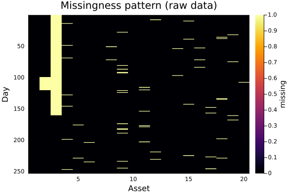

The source files can be found in examples/.
Data preprocessing and imputation
Real price data is rarely clean. Assets list partway through the window (leading gaps), trade halts and stale quotes leave flat or missing stretches, names get delisted (trailing gaps), and exchanges keep different holiday calendars so timestamps do not line up. Feeding that straight into an optimiser is a recipe for silent errors. prices_to_returns handles all of it in one call, before it computes returns, through three cooperating controls:
missing_col_percent— drop any asset whose fraction of missing observations exceeds this threshold (too sparse to trust).missing_row_percent— drop any timestamp whose fraction of missing values across assets exceeds this threshold (e.g. a misaligned holiday).impute_method— fill the remaining gaps with anImputeimputor before differencing prices into returns.
The order matters: filter the hopeless rows/columns first, then impute what is left, then compute returns.
Reach for these whenever the raw price table has missing values — newly listed or delisted assets, halted or stale prices, or non-overlapping trading calendars. The decision for each asset or date is drop or fill: drop what is too sparse to trust (missing_*_percent), fill what is recoverable (impute_method), and let prices_to_returns do both in one pass.
Imputation methods are Impute.jl imputors passed via impute_method. Impute is an optional dependency of PortfolioOptimisers — add it to your project and using Impute to load PortfolioOptimisersImputeExt, which is what teaches prices_to_returns to accept an imputor; without it, passing one is an error. Note that this is unrelated to Imputer, PortfolioOptimisers' own imputation estimator for pipelines. The two most useful imputors for prices are Impute.LOCF() (last observation carried forward — the right model for a halt or stale quote, since it holds the last traded price) and Impute.Interpolate() (linear interpolation — natural for short gaps between two good prices).
using PortfolioOptimisers, PrettyTables, DataFrames, Statistics, Imputeresfmt = (v, i, j) -> begin if j == 1 return v else return isa(v, Number) ? "$(round(v * 100, digits = 3)) %" : v endend;1. A clean slice, then realistic damage
We start from the usual S&P 500 slice and deliberately injure it to mimic the messes above: one asset that is mostly missing (a late lister we will want to drop), a halted block of one asset, and scattered single-day gaps across the rest.
using CSV, TimeSeriesX = TimeArray(CSV.File(joinpath(@__DIR__, "..", "SP500.csv.gz")); timestamp = :Date)[(end - 252):end]ts = timestamp(X)nx = string.(colnames(X))T, N = size(values(X))vals = Matrix{Union{Float64, Missing}}(values(X))vals[1:160, 3] .= missing # asset 3: mostly missing (late lister → drop)vals[100:120, 2] .= missing # asset 2: a ~3-week trading halt (fillable)using StableRNGsrng = StableRNG(42)for _ in 1:60 # scattered single-day gaps elsewhere vals[rand(rng, 1:T), rand(rng, 4:N)] = missingendXmiss = TimeArray(ts, vals, Symbol.(nx))253×20 TimeSeries.TimeArray{Union{Missing, Float64}, 2, Date, Matrix{Union{Missing, Float64}}} 2021-12-28 to 2022-12-28
┌────────────┬─────────┬─────────┬─────────┬─────────┬─────────┬─────────┬─────────┬─────────┬─────────┬────────┬─────────┬─────────┬─────────┬─────────┬─────────┬─────────┬─────────┬─────────┬─────────┬─────────┐
│ │ AAPL │ AMD │ BAC │ BBY │ CVX │ GE │ HD │ JNJ │ JPM │ KO │ LLY │ MRK │ MSFT │ PEP │ PFE │ PG │ RRC │ UNH │ WMT │ XOM │
├────────────┼─────────┼─────────┼─────────┼─────────┼─────────┼─────────┼─────────┼─────────┼─────────┼────────┼─────────┼─────────┼─────────┼─────────┼─────────┼─────────┼─────────┼─────────┼─────────┼─────────┤
│ 2021-12-28 │ 177.738 │ 153.15 │ missing │ 92.981 │ 112.335 │ 73.953 │ 390.59 │ 163.569 │ 150.437 │ 56.324 │ 271.118 │ 73.413 │ 336.502 │ 165.585 │ 54.471 │ 155.94 │ 18.827 │ 492.795 │ 139.467 │ 58.376 │
│ 2021-12-29 │ 177.827 │ 148.26 │ missing │ 94.233 │ 111.757 │ 73.557 │ 395.032 │ 164.722 │ 150.361 │ 56.391 │ 273.07 │ 73.547 │ 337.192 │ 166.171 │ 54.068 │ 157.232 │ 18.788 │ 495.382 │ 139.398 │ 57.865 │
│ 2021-12-30 │ 176.657 │ 145.15 │ missing │ 94.877 │ 111.264 │ 73.487 │ 394.167 │ 165.451 │ 150.285 │ 56.228 │ 271.922 │ 73.729 │ 334.599 │ 165.883 │ 54.838 │ 155.872 │ 18.057 │ 494.255 │ 139.848 │ 57.525 │
│ 2021-12-31 │ 176.033 │ 143.9 │ missing │ 94.924 │ 111.188 │ 73.309 │ 399.042 │ 164.261 │ 150.162 │ 56.639 │ 270.912 │ 73.251 │ 331.64 │ 166.882 │ 55.448 │ 156.648 │ 17.622 │ 492.011 │ 141.332 │ 57.903 │
│ 2022-01-03 │ 180.434 │ 150.24 │ missing │ 95.41 │ 112.998 │ 74.682 │ 392.917 │ 164.712 │ 153.338 │ 56.726 │ 266.509 │ 73.471 │ 330.092 │ 166.181 │ 53.194 │ 155.997 │ 18.146 │ 492.148 │ 141.293 │ 60.127 │
│ 2022-01-04 │ 178.144 │ 144.42 │ missing │ 98.231 │ 115.054 │ 77.111 │ 396.955 │ 164.27 │ 159.151 │ 57.673 │ 261.683 │ 73.605 │ 324.432 │ 166.421 │ 51.204 │ 156.543 │ 18.432 │ 480.998 │ 138.705 │ 62.389 │
│ 2022-01-05 │ 173.406 │ 136.15 │ missing │ 96.232 │ 115.803 │ 77.111 │ 391.571 │ 165.365 │ 156.242 │ 58.151 │ 255.641 │ 75.392 │ 311.978 │ 166.988 │ 52.237 │ 157.251 │ 18.076 │ 479.812 │ 140.58 │ 63.165 │
│ 2022-01-06 │ 170.511 │ 136.23 │ missing │ 96.12 │ 116.788 │ 77.561 │ 390.148 │ 164.798 │ 157.902 │ 57.845 │ 254.347 │ missing │ 309.513 │ 167.026 │ 51.495 │ 155.93 │ 18.501 │ 460.177 │ 140.19 │ 64.65 │
│ 2022-01-07 │ 170.679 │ 132.0 │ missing │ 95.765 │ 118.465 │ 78.686 │ 378.465 │ 167.026 │ 159.466 │ 57.711 │ 254.514 │ 76.749 │ 309.67 │ 167.238 │ 52.321 │ 155.844 │ 18.491 │ 449.35 │ 141.528 │ 65.18 │
│ 2022-01-10 │ 170.699 │ 132.0 │ missing │ 95.999 │ 118.541 │ 77.15 │ 372.552 │ 166.2 │ 159.619 │ 57.807 │ 255.112 │ 78.728 │ 309.897 │ 167.324 │ missing │ 153.718 │ 19.45 │ 455.62 │ 141.254 │ 64.792 │
│ 2022-01-11 │ 173.564 │ 137.31 │ missing │ 97.25 │ 121.251 │ 78.989 │ 371.792 │ 164.434 │ 159.781 │ 57.826 │ 257.279 │ 78.059 │ 310.597 │ 167.247 │ 53.232 │ 151.937 │ 20.409 │ 459.54 │ 140.854 │ 67.518 │
│ 2022-01-12 │ 174.01 │ 137.47 │ missing │ 95.933 │ 120.644 │ 79.338 │ 374.417 │ 163.032 │ 160.687 │ 57.912 │ 251.002 │ 77.609 │ 313.842 │ 167.065 │ 53.194 │ 152.272 │ 22.158 │ 464.164 │ 140.111 │ 67.319 │
│ 2022-01-13 │ 170.699 │ 132.74 │ missing │ 95.858 │ 120.142 │ 79.509 │ 372.09 │ 162.043 │ 160.487 │ 58.256 │ 244.872 │ 77.724 │ 300.559 │ 167.334 │ 52.152 │ 151.582 │ 21.081 │ 458.001 │ 142.094 │ 66.836 │
│ 2022-01-14 │ 171.572 │ 136.88 │ missing │ missing │ 122.189 │ 80.052 │ 357.687 │ 161.159 │ 150.623 │ 58.725 │ 239.429 │ 77.781 │ 305.884 │ 168.736 │ 51.598 │ 153.038 │ 21.535 │ 459.236 │ 141.694 │ 68.01 │
│ 2022-01-18 │ 168.33 │ 131.93 │ missing │ 92.159 │ 122.587 │ 79.843 │ 352.61 │ 160.449 │ 144.307 │ 58.256 │ 242.322 │ 77.934 │ 298.439 │ 167.122 │ 50.809 │ 150.088 │ 20.251 │ 451.691 │ 139.213 │ 69.155 │
│ 2022-01-19 │ 164.791 │ 128.27 │ missing │ 92.822 │ 122.141 │ 78.081 │ 345.85 │ 159.949 │ 142.075 │ 58.352 │ 240.341 │ 77.695 │ 299.109 │ 168.323 │ 50.274 │ 155.135 │ 19.717 │ 453.19 │ 140.6 │ 69.183 │
│ 2022-01-20 │ 163.086 │ 121.89 │ missing │ 88.664 │ 121.706 │ 76.242 │ 336.129 │ 158.672 │ 140.864 │ 58.113 │ 238.458 │ 77.179 │ 297.404 │ 167.103 │ 50.753 │ 155.973 │ 18.254 │ 453.661 │ 137.943 │ 69.334 │
│ 2022-01-21 │ 161.004 │ 118.81 │ missing │ 90.112 │ 120.246 │ 74.729 │ 335.668 │ 158.308 │ 138.402 │ 57.826 │ 238.389 │ 76.443 │ 291.911 │ 167.372 │ 49.57 │ 156.57 │ 17.414 │ 451.868 │ 136.937 │ 68.294 │
│ 2022-01-24 │ 160.221 │ 116.53 │ missing │ 94.719 │ 120.502 │ 75.202 │ 349.812 │ 156.483 │ 138.278 │ 57.357 │ 235.8 │ 75.344 │ 292.246 │ 166.517 │ 48.396 │ 155.299 │ 17.898 │ 452.945 │ 136.947 │ 68.88 │
│ 2022-01-25 │ 158.397 │ 111.13 │ missing │ 91.589 │ 125.628 │ 70.701 │ 345.168 │ 160.958 │ 139.786 │ 57.223 │ 234.859 │ 75.946 │ 284.476 │ 164.605 │ 49.335 │ 153.604 │ 18.017 │ 447.625 │ 133.967 │ 70.905 │
│ 2022-01-26 │ 158.308 │ 110.71 │ missing │ 90.552 │ 125.723 │ 69.312 │ 343.533 │ 161.678 │ 141.112 │ 57.013 │ 233.289 │ 75.64 │ 292.582 │ 162.866 │ 49.776 │ 152.266 │ 17.958 │ 449.183 │ 132.6 │ 70.186 │
│ 2022-01-27 │ 157.842 │ 102.6 │ missing │ 89.786 │ 128.262 │ 69.762 │ 342.716 │ 163.8 │ 138.622 │ 57.06 │ 232.171 │ 77.017 │ 295.668 │ 162.713 │ 50.495 │ 153.21 │ 18.155 │ 452.289 │ 132.688 │ 71.085 │
│ 2022-01-28 │ 168.855 │ 105.24 │ missing │ 91.224 │ 123.752 │ 71.47 │ 352.437 │ 164.952 │ 139.862 │ 58.199 │ 240.39 │ 77.323 │ 303.971 │ 165.883 │ 51.404 │ 154.529 │ 19.203 │ 456.659 │ 134.329 │ 71.237 │
│ 2022-01-31 │ 173.267 │ 114.25 │ missing │ 92.757 │ 124.434 │ 73.316 │ 352.86 │ 165.432 │ 141.76 │ 58.361 │ 240.675 │ 77.877 │ 306.653 │ 166.7 │ 49.852 │ 154.48 │ 19.025 │ 463.038 │ 136.566 │ 71.88 │
│ 2022-02-01 │ 173.098 │ 116.78 │ missing │ 93.85 │ 127.713 │ 76.009 │ 354.514 │ 164.078 │ 144.193 │ 57.931 │ 243.509 │ 78.298 │ 304.464 │ 165.566 │ 50.212 │ 153.797 │ 20.142 │ 458.962 │ 137.64 │ 76.488 │
│ 2022-02-02 │ 174.318 │ 122.76 │ missing │ 92.542 │ 128.3 │ 76.079 │ 359.35 │ 165.893 │ 143.039 │ 58.524 │ 246.01 │ 78.384 │ 309.098 │ 168.573 │ 50.959 │ 156.55 │ 20.893 │ 470.102 │ 137.582 │ 76.29 │
│ 2022-02-03 │ 171.403 │ 120.08 │ missing │ 90.72 │ 127.154 │ 76.296 │ 350.773 │ 165.883 │ 141.856 │ 58.935 │ 240.106 │ 75.516 │ 297.058 │ 168.477 │ 50.505 │ 158.033 │ 20.211 │ 478.911 │ 137.718 │ 75.4 │
│ 2022-02-04 │ 171.115 │ 123.6 │ missing │ 90.468 │ 128.746 │ 76.832 │ 345.831 │ 164.798 │ missing │ 58.313 │ 237.615 │ 75.086 │ 301.683 │ 165.71 │ 50.145 │ 155.52 │ 20.142 │ 473.424 │ 136.097 │ 77.037 │
│ 2022-02-07 │ 170.391 │ 123.67 │ missing │ 91.168 │ 131.275 │ 77.522 │ 343.6 │ 164.251 │ 146.025 │ 58.926 │ 238.87 │ 74.149 │ 296.763 │ 165.057 │ 50.344 │ 154.355 │ 19.727 │ 473.943 │ 134.759 │ 77.965 │
│ 2022-02-08 │ 173.537 │ 128.23 │ missing │ 92.925 │ 129.276 │ 77.064 │ 347.533 │ 164.683 │ 148.772 │ 59.308 │ 235.3 │ 73.509 │ 300.322 │ 165.259 │ 48.915 │ 154.009 │ 18.837 │ 483.457 │ 134.788 │ 75.949 │
│ 2022-02-09 │ 174.977 │ 132.85 │ missing │ 95.503 │ 130.555 │ 77.018 │ 350.35 │ 164.664 │ 149.392 │ 58.39 │ 238.595 │ 73.146 │ 306.88 │ 165.182 │ 48.698 │ 153.662 │ 19.015 │ 488.053 │ 134.495 │ 75.585 │
│ 2022-02-10 │ 170.847 │ 125.77 │ missing │ 93.868 │ 128.897 │ 76.661 │ 341.427 │ 162.676 │ 148.772 │ 58.715 │ 235.035 │ 73.175 │ 298.173 │ 161.752 │ 47.875 │ 151.322 │ 20.102 │ 476.902 │ missing │ 74.858 │
│ 2022-02-11 │ 167.393 │ 113.18 │ missing │ 93.962 │ 131.522 │ 75.14 │ 336.812 │ 161.035 │ 146.836 │ 57.673 │ 231.21 │ 73.251 │ 290.935 │ 161.954 │ 48.045 │ 150.475 │ 20.745 │ 468.486 │ 132.19 │ 76.743 │
│ 2022-02-14 │ 167.631 │ 114.27 │ missing │ 94.027 │ 129.494 │ 74.962 │ 338.033 │ 159.008 │ 145.471 │ 58.046 │ 231.141 │ 73.089 │ 290.895 │ 160.148 │ 47.118 │ 150.908 │ 20.241 │ 464.831 │ 130.842 │ 75.566 │
│ 2022-02-15 │ 171.512 │ 121.47 │ missing │ 95.475 │ 128.546 │ 78.314 │ 339.668 │ 160.65 │ 147.599 │ 58.266 │ 240.153 │ 74.369 │ 296.289 │ 159.437 │ 47.108 │ 150.985 │ 20.013 │ 468.584 │ 131.252 │ 74.619 │
│ 2022-02-16 │ 171.274 │ 117.69 │ missing │ 93.084 │ 128.584 │ 78.694 │ 336.62 │ 160.554 │ 147.866 │ 58.256 │ 241.866 │ 73.805 │ 295.943 │ 159.763 │ 47.004 │ 152.131 │ 19.944 │ missing │ 130.431 │ 74.964 │
│ 2022-02-17 │ 167.631 │ 112.37 │ missing │ 92.149 │ 127.924 │ 76.405 │ 334.553 │ 159.575 │ 144.46 │ 59.423 │ 237.326 │ 72.983 │ 287.278 │ 160.196 │ 46.266 │ 153.874 │ 20.181 │ 460.853 │ 135.657 │ 74.849 │
│ 2022-02-18 │ 166.063 │ 113.83 │ missing │ 91.29 │ 127.742 │ 71.927 │ 333.524 │ 157.865 │ 145.137 │ 59.825 │ 236.676 │ 72.993 │ 284.511 │ 161.118 │ 45.916 │ 153.951 │ 20.191 │ missing │ 134.788 │ 74.016 │
│ 2022-02-22 │ 163.105 │ 115.65 │ missing │ 84.6 │ 126.765 │ 73.06 │ 304.005 │ 155.719 │ 144.88 │ 59.576 │ 235.514 │ 72.592 │ 284.303 │ 161.733 │ missing │ 152.054 │ 19.747 │ 453.181 │ 133.284 │ 73.155 │
│ 2022-02-23 │ 158.886 │ 109.76 │ missing │ 82.806 │ 129.781 │ 71.896 │ 296.582 │ 155.797 │ 141.846 │ 58.916 │ 234.706 │ 72.486 │ 276.942 │ 160.138 │ 44.346 │ 150.157 │ 22.385 │ 450.349 │ 131.916 │ 73.452 │
│ 2022-02-24 │ 161.537 │ 116.61 │ missing │ 85.562 │ 129.111 │ 71.811 │ 301.188 │ 152.82 │ 137.897 │ 57.883 │ 239.404 │ 70.259 │ 291.092 │ 157.352 │ 43.485 │ 146.114 │ 23.591 │ 446.694 │ 131.408 │ 72.524 │
│ 2022-02-25 │ 163.631 │ 121.06 │ missing │ 89.533 │ 134.406 │ 74.783 │ 304.466 │ 160.416 │ 141.159 │ 60.121 │ 247.057 │ 72.945 │ 293.779 │ 161.762 │ 45.15 │ 152.353 │ 23.137 │ 466.154 │ 133.215 │ 74.476 │
│ 2022-02-28 │ 163.899 │ 123.34 │ missing │ 90.29 │ 137.872 │ 74.116 │ 303.678 │ 159.034 │ 135.273 │ 59.538 │ 246.17 │ 73.194 │ 295.242 │ 157.304 │ 44.412 │ 150.09 │ 22.682 │ 466.271 │ 132.024 │ 75.031 │
│ 2022-03-01 │ 161.993 │ 113.83 │ missing │ 90.795 │ 143.348 │ 71.648 │ 307.928 │ 158.483 │ 130.17 │ 59.28 │ 245.727 │ 72.964 │ 291.447 │ 155.892 │ 43.286 │ 147.606 │ 23.492 │ 466.643 │ 132.834 │ 75.748 │
│ 2022-03-02 │ 165.328 │ 118.28 │ missing │ 94.214 │ 147.58 │ 73.068 │ 314.774 │ 160.454 │ 132.869 │ 59.72 │ 250.327 │ 73.28 │ 296.625 │ 158.053 │ 45.131 │ 148.068 │ 24.896 │ 475.589 │ 133.0 │ 77.049 │
│ 2022-03-03 │ 165.001 │ 111.98 │ missing │ 102.903 │ 149.572 │ 71.741 │ 311.88 │ 162.812 │ 131.925 │ 59.758 │ 254.729 │ 73.738 │ 292.406 │ 157.884 │ 45.254 │ 148.617 │ 24.599 │ 476.775 │ 136.058 │ 77.537 │
│ 2022-03-04 │ 161.963 │ 108.41 │ missing │ 99.128 │ 151.898 │ 69.173 │ 311.784 │ 163.779 │ 128.214 │ 59.854 │ 258.895 │ 74.388 │ 286.418 │ 160.282 │ 46.03 │ 149.368 │ 26.171 │ 488.592 │ 139.506 │ 80.455 │
│ 2022-03-07 │ 158.122 │ 102.95 │ missing │ 97.83 │ 155.144 │ 66.314 │ 310.351 │ 166.417 │ 123.263 │ 58.428 │ 257.684 │ 74.293 │ 275.598 │ 157.091 │ 45.396 │ 147.154 │ 26.418 │ 477.049 │ 138.383 │ 83.354 │
│ 2022-03-08 │ 156.276 │ 105.53 │ missing │ missing │ 163.273 │ 68.466 │ 304.553 │ 163.044 │ 122.395 │ 56.113 │ 255.999 │ 73.547 │ 272.574 │ 152.662 │ 44.885 │ 141.329 │ 25.835 │ 463.91 │ 135.52 │ 83.986 │
│ 2022-03-09 │ 161.745 │ 111.05 │ missing │ 95.055 │ 159.194 │ 70.874 │ 306.836 │ 163.663 │ 127.298 │ 56.4 │ 258.816 │ 74.35 │ 285.074 │ 152.208 │ 46.124 │ 143.235 │ 26.368 │ 475.775 │ 136.224 │ 79.212 │
│ 2022-03-10 │ 157.348 │ 106.46 │ missing │ 92.177 │ 163.55 │ 70.936 │ 307.552 │ missing │ 125.791 │ 55.367 │ 261.997 │ 74.446 │ 282.199 │ 149.413 │ 46.55 │ 139.547 │ 27.801 │ 481.527 │ 139.32 │ 81.671 │
│ 2022-03-11 │ 153.586 │ 104.29 │ missing │ 88.375 │ 163.627 │ 71.674 │ 306.439 │ 163.653 │ 122.958 │ 55.405 │ 262.273 │ 74.799 │ 276.744 │ 148.659 │ 47.562 │ 137.891 │ 27.208 │ 474.53 │ 138.773 │ 81.25 │
│ 2022-03-14 │ 149.506 │ 102.25 │ missing │ 88.421 │ 159.625 │ 71.806 │ 307.958 │ 165.914 │ 124.179 │ 56.427 │ 264.932 │ 75.002 │ 273.157 │ 150.748 │ 49.436 │ missing │ 25.261 │ 479.493 │ 140.707 │ 78.341 │
│ 2022-03-15 │ 153.943 │ 109.33 │ missing │ 92.551 │ 151.544 │ 71.728 │ 317.805 │ 170.215 │ 126.382 │ 57.468 │ 271.295 │ 75.831 │ 283.74 │ missing │ 49.398 │ 144.679 │ 25.192 │ 489.31 │ 142.397 │ 73.882 │
│ 2022-03-16 │ 158.41 │ 115.37 │ missing │ 92.345 │ 150.998 │ 73.553 │ 320.098 │ 168.649 │ 132.03 │ 57.314 │ 272.26 │ 75.33 │ 290.894 │ 154.432 │ 50.07 │ 144.188 │ 25.202 │ 489.654 │ 141.977 │ 73.605 │
│ 2022-03-17 │ 159.432 │ 111.69 │ missing │ 92.766 │ 153.612 │ 74.198 │ 325.37 │ 170.852 │ 133.699 │ 57.921 │ 281.193 │ 76.12 │ 291.714 │ 155.631 │ 51.319 │ 144.641 │ 26.606 │ 498.263 │ 142.193 │ 75.566 │
│ 2022-03-18 │ 162.767 │ 113.46 │ missing │ 95.148 │ 154.847 │ 74.244 │ 329.607 │ 168.958 │ 133.652 │ 57.931 │ 283.29 │ 76.284 │ 296.862 │ 157.42 │ 51.574 │ 144.564 │ 26.24 │ 497.378 │ 142.614 │ 75.27 │
│ 2022-03-21 │ 164.157 │ 115.92 │ missing │ 92.532 │ 157.633 │ 73.646 │ 318.608 │ 169.915 │ 133.222 │ 58.394 │ 285.26 │ 76.236 │ 295.607 │ 157.198 │ 51.271 │ 145.112 │ 26.566 │ 498.892 │ 141.428 │ 78.647 │
│ 2022-03-22 │ 167.572 │ 114.78 │ missing │ 92.775 │ 157.107 │ 73.708 │ 318.956 │ 169.113 │ 136.056 │ 58.606 │ 280.71 │ 76.468 │ 300.449 │ 158.919 │ 50.183 │ 146.229 │ 26.447 │ 496.592 │ 141.006 │ 78.303 │
│ 2022-03-23 │ 168.951 │ 113.92 │ missing │ 91.05 │ 158.801 │ 72.776 │ 306.691 │ 168.475 │ 133.346 │ 58.22 │ 279.893 │ 76.882 │ 295.934 │ 158.087 │ 49.379 │ 145.209 │ 28.068 │ 494.538 │ 139.192 │ 79.537 │
│ 2022-03-24 │ 172.783 │ 120.53 │ missing │ 91.163 │ 159.223 │ 73.103 │ 305.462 │ 169.345 │ 134.214 │ 58.779 │ 283.34 │ 77.538 │ 300.489 │ 159.045 │ 49.757 │ 145.459 │ 28.76 │ 504.592 │ 140.055 │ 79.776 │
│ 2022-03-25 │ 173.428 │ 119.67 │ missing │ 90.777 │ 162.105 │ 73.025 │ 300.529 │ 170.968 │ 135.388 │ 59.309 │ 284.65 │ 78.435 │ 300.074 │ 159.789 │ 49.937 │ 147.144 │ 31.142 │ 504.169 │ 140.663 │ 81.517 │
│ 2022-03-28 │ 174.302 │ 120.24 │ missing │ 91.182 │ 159.27 │ 71.456 │ 304.011 │ 171.848 │ 134.386 │ 59.685 │ 287.25 │ 78.309 │ 307.01 │ 160.263 │ 50.41 │ 148.155 │ 30.836 │ 504.336 │ 143.164 │ 79.231 │
│ 2022-03-29 │ 177.637 │ 123.23 │ missing │ 94.972 │ 157.327 │ 73.514 │ 307.329 │ 171.761 │ 134.682 │ 59.917 │ 284.029 │ 78.656 │ 311.664 │ 162.642 │ 49.899 │ 149.676 │ 30.549 │ 501.909 │ 144.37 │ 78.81 │
│ 2022-03-30 │ 176.456 │ 119.22 │ missing │ 90.899 │ 158.438 │ 73.46 │ 298.381 │ 173.549 │ 134.071 │ 59.965 │ 285.506 │ 79.457 │ 310.133 │ 162.419 │ 49.615 │ 148.646 │ 30.331 │ 511.825 │ 146.958 │ 80.159 │
│ 2022-03-31 │ 173.319 │ 109.34 │ missing │ 85.687 │ 155.9 │ 71.068 │ 289.55 │ 171.268 │ 130.046 │ 59.762 │ 282.04 │ 79.119 │ 304.649 │ 161.859 │ 48.982 │ 147.115 │ 30.025 │ 501.162 │ 146.027 │ 79.02 │
│ 2022-04-01 │ 173.021 │ 108.19 │ missing │ 85.196 │ 157.231 │ 71.837 │ 292.026 │ 172.196 │ 129.082 │ 60.601 │ 288.244 │ 80.537 │ 305.746 │ 164.16 │ 48.792 │ 149.32 │ 31.181 │ 503.737 │ 148.076 │ 79.527 │
│ 2022-04-04 │ 177.121 │ 110.53 │ missing │ 88.929 │ 157.375 │ 71.472 │ 295.596 │ 170.534 │ 129.654 │ 60.283 │ 287.013 │ 80.508 │ 311.23 │ 163.735 │ 48.196 │ 148.347 │ 30.766 │ 501.211 │ 148.106 │ 79.566 │
│ 2022-04-05 │ 173.766 │ 106.82 │ missing │ missing │ 156.408 │ 69.98 │ 294.899 │ 171.635 │ 128.146 │ 60.215 │ 288.067 │ 80.73 │ 307.188 │ 163.909 │ 48.48 │ 148.867 │ 30.737 │ 508.817 │ 148.527 │ 79.154 │
│ 2022-04-06 │ 170.559 │ 103.67 │ missing │ 85.837 │ 157.796 │ 69.833 │ 288.786 │ 176.1 │ 126.368 │ 60.823 │ 301.215 │ 81.935 │ 295.943 │ 166.703 │ 50.022 │ 150.995 │ 31.152 │ 522.566 │ 151.979 │ 80.034 │
│ 2022-04-07 │ 170.867 │ 103.72 │ missing │ 86.789 │ 159.989 │ 69.483 │ 292.858 │ 175.646 │ 125.983 │ 61.15 │ 303.766 │ 83.7 │ 297.791 │ 166.858 │ 52.189 │ 152.95 │ 31.004 │ 527.676 │ 153.499 │ 81.374 │
│ 2022-04-08 │ 168.832 │ 101.0 │ missing │ 88.005 │ 162.698 │ 69.701 │ 300.945 │ missing │ 128.29 │ 61.526 │ 306.977 │ 84.548 │ 293.443 │ 167.419 │ 52.198 │ missing │ 32.219 │ 536.53 │ 154.352 │ 83.087 │
│ 2022-04-11 │ 164.524 │ 97.37 │ missing │ 88.76 │ 158.514 │ 69.646 │ 296.698 │ 173.79 │ 127.819 │ 61.507 │ 304.288 │ 83.536 │ 281.873 │ 166.906 │ 51.025 │ 153.556 │ 31.557 │ 528.157 │ 151.293 │ 80.226 │
│ 2022-04-12 │ 166.42 │ 95.1 │ missing │ 87.883 │ 161.817 │ 69.903 │ 296.282 │ 173.848 │ 126.416 │ 62.23 │ 303.421 │ 82.571 │ 278.711 │ 167.583 │ 50.249 │ 153.094 │ 31.379 │ 524.492 │ 150.253 │ 81.9 │
│ 2022-04-13 │ 169.14 │ 97.74 │ missing │ 89.768 │ 164.364 │ 70.485 │ 300.277 │ 174.583 │ 122.341 │ 62.394 │ 298.093 │ 83.054 │ 284.204 │ 167.293 │ 50.24 │ 153.527 │ 32.298 │ 527.725 │ missing │ 83.058 │
│ 2022-04-14 │ 164.068 │ 93.06 │ missing │ 88.458 │ 164.287 │ 70.547 │ 294.57 │ 173.848 │ 121.207 │ 62.673 │ 297.295 │ 83.806 │ 276.507 │ 166.229 │ 50.259 │ 152.67 │ 32.012 │ 525.583 │ 154.028 │ 84.034 │
│ 2022-04-18 │ 163.849 │ 93.89 │ missing │ 88.119 │ 166.49 │ 70.213 │ 290.401 │ 171.683 │ 123.456 │ 62.114 │ 294.301 │ 82.996 │ 277.189 │ 164.798 │ 49.048 │ 151.217 │ 33.563 │ 524.856 │ 152.852 │ 84.723 │
│ 2022-04-19 │ 166.162 │ 96.93 │ missing │ 90.089 │ 164.517 │ 71.378 │ 297.743 │ 176.921 │ 126.012 │ 62.722 │ 292.519 │ 82.726 │ 281.912 │ 167.196 │ 47.477 │ 153.479 │ 32.259 │ 528.413 │ 154.587 │ 83.967 │
│ 2022-04-20 │ 165.993 │ 94.02 │ missing │ 88.986 │ 165.187 │ 70.99 │ 304.843 │ 177.704 │ 126.454 │ 63.579 │ 288.491 │ 83.372 │ 282.959 │ 169.682 │ 47.07 │ 157.561 │ 32.585 │ 536.579 │ 156.529 │ 84.158 │
│ 2022-04-21 │ 165.189 │ 89.85 │ missing │ 88.269 │ 157.576 │ 71.239 │ 300.219 │ 177.192 │ 125.474 │ 63.82 │ 285.231 │ 83.15 │ 277.475 │ 169.072 │ 46.465 │ 157.438 │ 31.29 │ 528.157 │ 156.764 │ 83.268 │
│ 2022-04-22 │ 160.594 │ 88.14 │ missing │ 86.045 │ 154.1 │ 69.18 │ 290.304 │ 175.433 │ missing │ 62.895 │ 274.515 │ 81.569 │ 270.776 │ 166.471 │ 45.538 │ 156.122 │ 29.995 │ 511.943 │ 153.813 │ 81.451 │
│ 2022-04-25 │ 161.676 │ 90.69 │ missing │ 87.732 │ 150.788 │ 69.809 │ 294.976 │ 179.753 │ 121.832 │ 63.56 │ 280.887 │ 82.388 │ 277.386 │ 168.009 │ 46.313 │ 157.38 │ 29.916 │ 515.215 │ 153.891 │ 78.705 │
│ 2022-04-26 │ 155.641 │ 85.16 │ missing │ 87.506 │ 149.868 │ 62.594 │ 290.159 │ 178.467 │ 118.228 │ 62.702 │ 278.553 │ 81.463 │ 267.011 │ 167.583 │ 46.389 │ 154.708 │ 29.155 │ 504.906 │ 152.283 │ 78.733 │
│ 2022-04-27 │ 155.412 │ 84.91 │ missing │ 87.694 │ 149.591 │ 60.745 │ 291.746 │ 175.974 │ 116.69 │ 63.194 │ 280.779 │ 81.395 │ 279.857 │ 169.082 │ 47.061 │ missing │ 30.47 │ 504.936 │ 151.244 │ 80.982 │
│ 2022-04-28 │ 162.43 │ 89.64 │ missing │ 88.213 │ 154.905 │ 60.373 │ 301.574 │ 177.288 │ 118.535 │ 63.801 │ 292.775 │ 85.416 │ 286.191 │ 171.645 │ 47.789 │ 158.213 │ 30.628 │ 515.362 │ 153.175 │ 83.431 │
│ 2022-04-29 │ 156.484 │ 85.52 │ missing │ 84.772 │ 150.002 │ 57.903 │ 290.585 │ 174.389 │ 114.71 │ 62.278 │ 287.713 │ 85.522 │ 274.224 │ 166.046 │ 46.427 │ 155.444 │ 29.59 │ 499.766 │ 150.018 │ 81.565 │
│ 2022-05-02 │ 156.792 │ 89.84 │ missing │ 88.43 │ 152.951 │ 58.679 │ 296.94 │ 172.63 │ missing │ 61.15 │ 285.181 │ 84.519 │ 281.092 │ 162.226 │ 45.736 │ 153.343 │ 29.501 │ 492.494 │ 149.027 │ 82.675 │
│ 2022-05-03 │ 158.301 │ 91.13 │ missing │ 89.221 │ 155.575 │ 60.318 │ 294.996 │ 172.292 │ 118.237 │ 60.803 │ 283.714 │ 83.989 │ 278.434 │ 162.448 │ 46.635 │ 151.242 │ 30.658 │ 490.991 │ 149.547 │ 84.378 │
│ 2022-05-04 │ 164.792 │ 99.42 │ missing │ 92.181 │ 160.458 │ 62.47 │ 305.008 │ 174.138 │ 122.149 │ 62.683 │ 290.441 │ 85.358 │ 286.536 │ 168.125 │ 46.985 │ 152.355 │ 31.666 │ 498.853 │ 151.616 │ 87.737 │
│ 2022-05-05 │ 155.611 │ 93.87 │ missing │ 86.921 │ 159.184 │ 61.041 │ 289.337 │ 170.814 │ 119.093 │ 62.182 │ 287.949 │ 84.866 │ 274.056 │ 164.769 │ 45.84 │ 149.548 │ 30.341 │ 486.175 │ 150.317 │ 86.407 │
│ 2022-05-06 │ 156.346 │ 95.34 │ missing │ 86.167 │ 163.426 │ 60.761 │ 284.694 │ 170.437 │ 118.9 │ 62.403 │ 292.41 │ 85.233 │ 271.468 │ 164.789 │ 46.399 │ 151.039 │ 30.183 │ 490.991 │ 147.188 │ 87.727 │
│ 2022-05-09 │ 151.157 │ 86.36 │ missing │ 85.856 │ 152.473 │ 56.676 │ 287.325 │ 171.365 │ missing │ 62.278 │ 284.856 │ 84.51 │ 261.438 │ 166.036 │ 46.02 │ 150.661 │ 26.388 │ 478.019 │ 148.91 │ 80.809 │
│ 2022-05-10 │ 153.593 │ 88.73 │ missing │ 83.65 │ 153.938 │ 56.94 │ 281.647 │ 171.133 │ missing │ 61.7 │ 281.38 │ 84.674 │ 266.3 │ 165.833 │ 46.824 │ 149.867 │ 26.358 │ 479.581 │ 146.814 │ 81.345 │
│ 2022-05-11 │ 145.63 │ 87.92 │ missing │ 78.984 │ 156.216 │ 56.264 │ 273.715 │ 170.205 │ 113.538 │ 61.989 │ 282.355 │ 86.004 │ 257.456 │ 165.03 │ 46.787 │ 147.756 │ 27.199 │ 477.753 │ 145.278 │ 83.039 │
│ 2022-05-12 │ 141.714 │ 87.06 │ missing │ 82.35 │ 157.7 │ 56.916 │ 280.225 │ 171.886 │ 113.442 │ 62.182 │ 287.388 │ 87.586 │ 252.318 │ 164.779 │ 48.065 │ 147.156 │ 26.754 │ 470.53 │ 145.141 │ 83.416 │
│ 2022-05-13 │ 146.237 │ 95.12 │ missing │ 81.407 │ 160.726 │ 58.291 │ 286.358 │ 170.901 │ 114.451 │ 63.348 │ 288.188 │ 87.181 │ 258.019 │ 167.989 │ 47.616 │ 148.734 │ 26.764 │ 477.016 │ 145.701 │ 85.89 │
│ 2022-05-16 │ 144.676 │ 94.24 │ missing │ 79.908 │ 165.647 │ 57.965 │ 286.319 │ 172.089 │ 113.653 │ 63.579 │ 295.847 │ 89.023 │ 258.395 │ missing │ 48.332 │ 150.187 │ 27.287 │ 480.77 │ 145.859 │ 87.91 │
│ 2022-05-17 │ 148.354 │ 102.47 │ missing │ 79.654 │ 166.624 │ 59.34 │ 291.117 │ 172.804 │ 117.42 │ 63.406 │ 297.843 │ 89.678 │ 263.651 │ 168.705 │ 48.971 │ 149.761 │ 28.73 │ 484.023 │ 129.266 │ 89.032 │
│ 2022-05-18 │ 139.984 │ 96.28 │ missing │ 71.283 │ 162.231 │ 58.408 │ 275.862 │ 169.596 │ 115.412 │ 58.991 │ 291.706 │ 88.81 │ 251.648 │ 158.252 │ 48.074 │ 140.427 │ 27.455 │ 463.238 │ 120.488 │ 87.62 │
│ 2022-05-19 │ 136.535 │ missing │ missing │ 69.115 │ 161.073 │ 58.827 │ 278.358 │ 168.089 │ 113.701 │ 57.835 │ 282.891 │ 88.801 │ 250.717 │ 155.882 │ 48.313 │ 137.193 │ 27.791 │ 470.285 │ 117.181 │ 88.094 │
│ 2022-05-20 │ 136.773 │ missing │ missing │ 68.21 │ 162.0 │ 58.446 │ 277.806 │ 171.026 │ 112.769 │ 58.779 │ 295.323 │ 90.209 │ 250.142 │ 156.859 │ 50.049 │ 137.281 │ 27.851 │ 477.341 │ 117.309 │ 88.79 │
│ 2022-05-23 │ 142.261 │ missing │ missing │ 68.427 │ 165.764 │ 58.609 │ 276.684 │ 174.518 │ 119.746 │ 60.591 │ 299.029 │ 90.479 │ 258.155 │ 160.137 │ 50.44 │ 140.437 │ 28.898 │ 483.581 │ 120.655 │ 90.752 │
│ 2022-05-24 │ 139.527 │ missing │ missing │ 69.256 │ 166.653 │ 57.879 │ 278.513 │ 176.424 │ 121.438 │ 61.709 │ 302.349 │ 91.26 │ 257.134 │ 162.284 │ 50.945 │ 142.935 │ 28.651 │ 488.966 │ 122.161 │ 91.245 │
│ 2022-05-25 │ 139.686 │ missing │ missing │ 75.468 │ 169.327 │ 57.887 │ 283.978 │ 174.693 │ 122.283 │ 61.758 │ 303.386 │ 90.401 │ 260.007 │ 163.396 │ 51.231 │ 140.592 │ 32.348 │ 489.487 │ 121.413 │ 93.082 │
│ 2022-05-26 │ 142.927 │ missing │ missing │ 77.344 │ 170.466 │ 59.813 │ 292.916 │ 174.537 │ 124.398 │ 61.979 │ 309.76 │ 89.013 │ 263.354 │ 164.498 │ 51.499 │ 141.821 │ 34.305 │ 493.556 │ 124.001 │ 93.41 │
│ 2022-05-27 │ 148.752 │ missing │ missing │ 79.173 │ 172.097 │ 61.173 │ 298.381 │ 176.123 │ 126.156 │ 62.346 │ 319.662 │ 89.755 │ 270.624 │ 166.104 │ 51.422 │ 143.99 │ 35.747 │ 498.351 │ 126.442 │ 94.328 │
│ 2022-05-31 │ 147.957 │ missing │ missing │ 77.354 │ 168.603 │ 60.808 │ 292.858 │ 174.605 │ 127.079 │ 61.093 │ 309.741 │ 88.743 │ 269.267 │ 162.216 │ 50.592 │ 143.177 │ 33.553 │ 488.2 │ 126.59 │ 92.792 │
│ 2022-06-01 │ 147.827 │ missing │ missing │ 75.487 │ 170.205 │ 60.209 │ 289.295 │ 172.835 │ 124.849 │ 60.794 │ 307.408 │ 87.885 │ 269.812 │ 160.998 │ 49.953 │ 141.008 │ 34.828 │ 484.043 │ 123.46 │ missing │
│ 2022-06-02 │ 150.312 │ missing │ missing │ 76.599 │ 169.896 │ 60.582 │ 297.745 │ 172.291 │ 126.858 │ 61.43 │ 298.861 │ 86.785 │ 271.951 │ 162.303 │ 50.249 │ 142.528 │ 34.591 │ 483.758 │ 125.487 │ 94.406 │
│ 2022-06-03 │ 144.517 │ missing │ missing │ 75.779 │ 171.441 │ 59.782 │ 296.976 │ 171.581 │ 125.089 │ 60.697 │ 298.09 │ 86.699 │ 267.435 │ 160.521 │ 50.745 │ 141.25 │ 34.453 │ 477.223 │ 123.332 │ 95.778 │
│ 2022-06-06 │ 145.273 │ missing │ missing │ 74.724 │ 170.697 │ 59.806 │ 295.817 │ 171.561 │ 124.676 │ 60.601 │ 299.78 │ 86.631 │ 266.177 │ 161.193 │ 50.802 │ 140.698 │ 35.293 │ 481.714 │ 122.889 │ 95.537 │
│ 2022-06-07 │ 147.827 │ missing │ missing │ 73.856 │ 173.95 │ 60.582 │ 293.754 │ 173.448 │ 125.003 │ 60.967 │ 308.416 │ 87.248 │ 269.891 │ 162.186 │ 51.47 │ 142.267 │ 36.588 │ 488.514 │ 121.413 │ 99.915 │
│ 2022-06-08 │ 147.082 │ missing │ missing │ 72.697 │ 174.848 │ 59.93 │ 289.626 │ 172.417 │ 123.014 │ 60.62 │ 309.79 │ 86.284 │ 267.821 │ 161.378 │ 51.003 │ 140.495 │ 35.579 │ 485.006 │ 120.36 │ 101.094 │
│ 2022-06-09 │ 141.793 │ missing │ missing │ 70.632 │ 171.363 │ 58.081 │ 291.894 │ 168.945 │ 120.428 │ 59.57 │ 299.671 │ 84.857 │ 262.255 │ 158.505 │ 49.391 │ 137.958 │ 34.927 │ 480.977 │ 119.1 │ 98.91 │
│ 2022-06-10 │ 136.316 │ missing │ missing │ 68.436 │ 169.317 │ 55.324 │ 281.556 │ 167.817 │ 114.893 │ 59.194 │ 293.505 │ 84.066 │ 250.568 │ 158.252 │ 47.664 │ 137.435 │ 34.038 │ 476.26 │ 119.769 │ 97.102 │
│ 2022-06-13 │ 131.097 │ missing │ missing │ 66.27 │ 161.527 │ 52.598 │ 275.638 │ 166.125 │ 111.472 │ 59.126 │ missing │ 81.964 │ 239.941 │ 155.545 │ 45.699 │ 133.756 │ 32.021 │ 461.587 │ 117.516 │ 92.647 │
│ 2022-06-14 │ 131.972 │ missing │ missing │ 67.358 │ 161.739 │ 52.854 │ 271.267 │ 163.576 │ 109.617 │ 57.505 │ 287.358 │ 82.149 │ 242.149 │ 152.02 │ 45.709 │ 129.583 │ 29.62 │ 453.775 │ 117.565 │ 92.888 │
│ 2022-06-15 │ 134.626 │ missing │ missing │ 68.474 │ 158.563 │ 53.67 │ 272.299 │ 165.327 │ 110.914 │ 57.932 │ 289.532 │ 82.275 │ 249.35 │ 153.646 │ 46.271 │ 128.296 │ 30.331 │ 456.31 │ 117.486 │ 91.719 │
│ 2022-06-16 │ 129.288 │ missing │ missing │ 65.344 │ 150.088 │ 50.71 │ 266.196 │ 165.415 │ 109.011 │ 57.349 │ 284.67 │ 82.528 │ 242.625 │ 152.906 │ 45.289 │ 129.08 │ 28.839 │ 449.811 │ 118.707 │ 88.336 │
│ 2022-06-17 │ 130.779 │ missing │ missing │ 67.282 │ 143.234 │ 51.262 │ 263.538 │ 164.812 │ 108.627 │ 57.699 │ missing │ 82.265 │ 245.279 │ 152.935 │ 44.383 │ 128.15 │ 25.983 │ 445.836 │ 116.414 │ 83.242 │
│ 2022-06-21 │ 135.063 │ 83.79 │ missing │ 67.243 │ 149.229 │ 51.068 │ 262.049 │ 168.264 │ missing │ 58.932 │ 293.831 │ 85.58 │ 251.311 │ 156.49 │ 45.89 │ 132.033 │ 26.606 │ 473.707 │ 120.232 │ 88.423 │
│ 2022-06-22 │ 134.547 │ 83.75 │ missing │ 66.68 │ 142.742 │ 50.128 │ 261.835 │ 170.919 │ 110.693 │ 59.369 │ 303.07 │ 86.679 │ 250.707 │ 157.775 │ 46.806 │ 134.095 │ 25.904 │ 482.939 │ 118.775 │ 84.924 │
│ 2022-06-23 │ 137.449 │ 82.43 │ missing │ 68.026 │ 137.49 │ 49.763 │ 268.104 │ 174.732 │ 109.482 │ 60.078 │ 309.029 │ 89.44 │ 256.382 │ 159.79 │ 47.779 │ 137.774 │ 24.056 │ 492.929 │ 121.659 │ 82.362 │
│ 2022-06-24 │ 140.819 │ 87.08 │ missing │ 71.27 │ 139.749 │ 52.101 │ 275.482 │ 177.29 │ missing │ 61.204 │ 321.777 │ 90.539 │ 265.137 │ 161.767 │ 49.209 │ 139.759 │ 25.983 │ 488.817 │ 121.757 │ 83.996 │
│ 2022-06-27 │ 140.819 │ 86.16 │ missing │ 68.837 │ 142.452 │ 51.875 │ 275.18 │ 177.124 │ 111.846 │ 61.078 │ 323.407 │ 91.783 │ 262.354 │ 161.981 │ 49.486 │ 138.694 │ 26.793 │ 498.699 │ 122.151 │ 86.054 │
│ 2022-06-28 │ 136.624 │ 80.78 │ missing │ 65.698 │ 144.74 │ 51.23 │ 262.974 │ 172.086 │ 111.308 │ 60.466 │ 313.871 │ 89.333 │ 254.025 │ 159.703 │ 48.322 │ 136.438 │ 27.327 │ 501.44 │ 120.429 │ 88.442 │
│ 2022-06-29 │ 138.404 │ 77.99 │ missing │ 64.075 │ 141.883 │ 49.527 │ 266.595 │ 172.135 │ 110.808 │ 60.903 │ 319.188 │ 89.936 │ 257.768 │ 162.351 │ 48.589 │ 137.678 │ 26.378 │ 508.61 │ 119.986 │ 85.175 │
│ 2022-06-30 │ 135.908 │ 76.47 │ missing │ missing │ 139.759 │ 49.511 │ 266.984 │ 172.641 │ 108.223 │ 61.078 │ 320.403 │ 88.633 │ 254.371 │ 162.283 │ 50.011 │ 139.217 │ 24.461 │ 506.559 │ 119.651 │ 82.778 │
│ 2022-07-01 │ 138.105 │ 73.67 │ missing │ 63.713 │ 141.429 │ 49.41 │ 271.666 │ 174.596 │ 109.607 │ 62.505 │ 320.878 │ 89.848 │ 257.095 │ 164.942 │ 49.896 │ 141.463 │ 25.084 │ 510.277 │ 120.685 │ 84.624 │
│ 2022-07-05 │ 140.72 │ 75.2 │ missing │ 66.776 │ 137.712 │ 48.236 │ 276.193 │ 173.254 │ 109.19 │ 61.437 │ 323.318 │ 90.062 │ 260.334 │ 164.572 │ 49.257 │ 140.098 │ 23.898 │ 498.284 │ 122.279 │ 81.976 │
│ 2022-07-06 │ 142.072 │ 75.35 │ missing │ 65.383 │ 135.898 │ 47.878 │ 276.047 │ 173.409 │ 108.482 │ 61.563 │ 326.253 │ 90.539 │ 263.661 │ 166.217 │ 50.316 │ 141.405 │ 23.749 │ 508.196 │ 123.145 │ 80.497 │
│ 2022-07-07 │ 145.481 │ 79.3 │ missing │ 67.644 │ 138.543 │ 48.99 │ 279.074 │ 173.604 │ 111.226 │ 61.078 │ 324.079 │ 90.422 │ 265.83 │ 165.886 │ 50.955 │ 141.357 │ 25.904 │ 507.298 │ 123.332 │ 83.068 │
│ 2022-07-08 │ 146.167 │ 79.35 │ missing │ 67.911 │ 137.819 │ 49.185 │ 278.86 │ 173.39 │ 110.877 │ 61.301 │ 326.57 │ 90.198 │ 265.098 │ 167.366 │ 50.716 │ 140.408 │ 25.321 │ 511.49 │ 123.411 │ 83.203 │
│ 2022-07-11 │ 144.01 │ 76.95 │ missing │ 66.709 │ 136.602 │ 48.143 │ 278.782 │ 173.458 │ 109.423 │ 61.107 │ 327.162 │ 91.676 │ 261.978 │ 165.993 │ 50.449 │ 141.395 │ 26.022 │ missing │ 123.46 │ 82.778 │
│ 2022-07-12 │ 144.994 │ 76.36 │ missing │ 67.196 │ 134.102 │ 49.006 │ 277.546 │ 171.026 │ 109.53 │ 60.845 │ 319.771 │ 90.995 │ 251.241 │ 165.049 │ 49.639 │ 140.146 │ 26.072 │ missing │ 123.086 │ 81.676 │
│ 2022-07-13 │ 144.626 │ 77.52 │ missing │ 68.026 │ 133.204 │ 48.22 │ 279.551 │ 170.628 │ 108.502 │ 60.563 │ 318.654 │ 91.161 │ 250.301 │ 165.633 │ 49.4 │ 141.066 │ 26.803 │ 494.339 │ 123.381 │ 82.005 │
│ 2022-07-14 │ 147.589 │ 78.6 │ missing │ 67.883 │ 131.225 │ 47.505 │ 281.79 │ 170.861 │ 104.711 │ 60.369 │ 323.032 │ 91.268 │ 251.648 │ 166.49 │ 49.019 │ 140.65 │ 26.24 │ 495.513 │ 125.792 │ 80.361 │
│ 2022-07-15 │ 149.279 │ 81.11 │ missing │ 69.152 │ 132.876 │ 48.881 │ 284.642 │ 173.341 │ 109.51 │ 60.68 │ 327.686 │ 92.318 │ 254.262 │ 166.626 │ 49.362 │ 140.456 │ 26.694 │ 522.457 │ 127.023 │ 81.715 │
│ 2022-07-18 │ 146.197 │ 81.43 │ missing │ 69.982 │ 134.739 │ 49.519 │ 285.265 │ 169.451 │ 108.385 │ 59.854 │ 317.972 │ 89.771 │ 251.816 │ 163.841 │ 48.408 │ 138.752 │ 27.505 │ 512.22 │ 126.727 │ 83.222 │
│ 2022-07-19 │ 150.104 │ 85.88 │ missing │ 72.492 │ 139.595 │ 51.899 │ 291.865 │ 166.98 │ 111.071 │ 60.709 │ 322.35 │ 89.79 │ 257.045 │ 165.594 │ 48.999 │ 139.459 │ 28.058 │ 526.106 │ 127.505 │ 85.32 │
│ 2022-07-20 │ 152.132 │ 89.43 │ missing │ 74.543 │ 141.438 │ 52.793 │ 294.269 │ 166.027 │ 111.052 │ 59.709 │ 318.229 │ 87.155 │ 259.759 │ 163.841 │ 48.475 │ 137.048 │ 29.966 │ 512.318 │ 128.568 │ 86.257 │
│ 2022-07-21 │ 154.428 │ 91.09 │ missing │ 74.619 │ 140.357 │ 52.979 │ 296.898 │ 166.611 │ 111.808 │ 59.573 │ 323.062 │ 87.632 │ 262.305 │ 164.085 │ 48.761 │ 137.178 │ 30.065 │ 515.267 │ 130.447 │ 84.817 │
│ 2022-07-22 │ 153.175 │ 88.1 │ missing │ 73.284 │ 139.189 │ 53.026 │ 298.445 │ 167.399 │ 111.265 │ 59.796 │ 324.87 │ 87.603 │ 257.867 │ 165.156 │ missing │ 139.37 │ 29.373 │ 514.232 │ 130.113 │ 84.17 │
│ 2022-07-25 │ 152.042 │ 87.54 │ missing │ 72.367 │ 143.33 │ 53.158 │ 298.017 │ 167.729 │ 111.711 │ 60.379 │ 327.637 │ 88.011 │ 256.352 │ 165.389 │ 49.381 │ 140.316 │ 31.458 │ 522.181 │ 129.926 │ 86.973 │
│ 2022-07-26 │ 150.7 │ 85.25 │ missing │ 68.713 │ 142.211 │ 55.608 │ 290.259 │ 168.916 │ 109.966 │ 61.369 │ 327.647 │ 88.75 │ 249.488 │ 167.317 │ 49.887 │ 140.588 │ 32.713 │ 524.272 │ 120.045 │ 86.634 │
│ 2022-07-27 │ 155.859 │ 89.82 │ missing │ missing │ 144.083 │ 55.662 │ 290.97 │ 168.449 │ 111.73 │ 61.175 │ 325.058 │ 88.691 │ 266.167 │ 167.084 │ 49.553 │ 141.924 │ 33.296 │ 527.25 │ 124.582 │ 88.51 │
│ 2022-07-28 │ 156.416 │ 91.67 │ missing │ 74.419 │ 145.174 │ 56.875 │ 291.67 │ 169.422 │ 111.313 │ 62.194 │ 326.896 │ 87.437 │ 273.764 │ 170.248 │ 48.755 │ 144.282 │ 31.903 │ 534.035 │ 127.692 │ 89.544 │
│ 2022-07-29 │ 161.545 │ 94.47 │ missing │ 73.465 │ 158.1 │ 57.474 │ 292.946 │ 169.733 │ 111.847 │ 62.301 │ 325.799 │ 86.854 │ 278.052 │ 170.365 │ 48.553 │ 135.365 │ missing │ 534.874 │ 129.955 │ 93.69 │
│ 2022-08-01 │ 160.551 │ 96.78 │ missing │ 73.455 │ 154.943 │ 58.944 │ 297.696 │ 169.14 │ 110.732 │ 62.641 │ 320.324 │ 86.067 │ 275.348 │ 172.303 │ 48.649 │ 139.253 │ 31.844 │ 528.009 │ 130.438 │ 91.322 │
│ 2022-08-02 │ 159.06 │ 99.29 │ missing │ 71.194 │ 153.621 │ 57.824 │ 292.722 │ 168.177 │ 109.006 │ 61.786 │ 316.421 │ 85.172 │ 272.189 │ 170.881 │ 47.765 │ 138.328 │ 31.31 │ 528.088 │ 130.575 │ 90.926 │
│ 2022-08-03 │ 165.144 │ 98.09 │ missing │ 72.224 │ 149.972 │ 58.12 │ 298.231 │ 169.801 │ 110.15 │ 62.058 │ 310.126 │ 85.182 │ 279.766 │ 172.186 │ 47.928 │ 141.183 │ 31.399 │ 533.207 │ 128.43 │ 87.978 │
│ 2022-08-04 │ 164.826 │ 103.91 │ missing │ 72.797 │ 145.898 │ 57.288 │ 299.01 │ 167.078 │ 108.938 │ 61.815 │ 302.181 │ 84.404 │ 280.934 │ 171.251 │ 47.928 │ 140.959 │ 29.65 │ 526.402 │ 123.578 │ 84.276 │
│ 2022-08-05 │ 164.597 │ 102.31 │ missing │ 72.883 │ 148.312 │ 57.824 │ 301.463 │ 166.416 │ 112.235 │ 61.534 │ 297.764 │ 84.978 │ 280.202 │ 169.966 │ 47.361 │ 141.027 │ 30.381 │ 527.694 │ 124.572 │ 85.494 │
│ 2022-08-08 │ 164.119 │ 100.07 │ missing │ 74.944 │ 148.09 │ 58.462 │ 303.683 │ 165.531 │ 110.867 │ 61.136 │ missing │ 86.028 │ 277.636 │ 169.284 │ 47.649 │ 141.563 │ 29.748 │ 529.213 │ 125.586 │ 85.977 │
│ 2022-08-09 │ 164.169 │ 95.54 │ missing │ 72.845 │ 150.02 │ 58.267 │ 297.102 │ 165.512 │ 111.866 │ 61.214 │ 299.444 │ 87.029 │ 279.597 │ 169.917 │ 47.851 │ 141.232 │ 31.794 │ 529.864 │ 126.826 │ 87.562 │
│ 2022-08-10 │ 168.469 │ 99.05 │ missing │ 74.915 │ 150.416 │ 59.986 │ 303.303 │ 165.988 │ 114.784 │ 61.796 │ 301.015 │ 86.708 │ 286.392 │ 171.32 │ 48.015 │ 142.567 │ 32.318 │ 530.317 │ 127.091 │ 88.394 │
│ 2022-08-11 │ 167.723 │ 98.12 │ missing │ 76.738 │ 154.084 │ 61.355 │ 302.437 │ 162.555 │ 116.481 │ 61.379 │ 297.615 │ 86.455 │ 284.272 │ 170.443 │ 46.419 │ 141.553 │ missing │ 525.524 │ 128.317 │ 90.951 │
│ 2022-08-12 │ 171.316 │ 100.83 │ missing │ 76.623 │ 154.306 │ 62.155 │ 306.525 │ 160.766 │ 118.411 │ 61.845 │ 305.438 │ 88.487 │ 289.115 │ 172.673 │ 48.169 │ 142.927 │ 33.712 │ 536.215 │ 130.689 │ 91.741 │
│ 2022-08-15 │ 172.401 │ 101.01 │ missing │ 77.606 │ 151.372 │ 62.062 │ 306.252 │ 161.534 │ 118.73 │ 62.621 │ 311.247 │ 88.079 │ 290.66 │ 174.572 │ 47.822 │ 144.769 │ 32.397 │ 537.142 │ 131.065 │ 90.102 │
│ 2022-08-16 │ 172.242 │ 100.2 │ missing │ 81.06 │ 150.985 │ 63.042 │ 318.683 │ 162.973 │ 119.865 │ 63.136 │ 307.649 │ 88.069 │ 289.908 │ 175.585 │ 47.928 │ 146.104 │ 33.079 │ 538.602 │ 137.757 │ 89.262 │
│ 2022-08-17 │ 173.755 │ 98.27 │ 35.447 │ 78.494 │ 152.231 │ 62.148 │ 317.106 │ 162.983 │ 118.857 │ 62.99 │ 314.103 │ 88.507 │ 289.143 │ 175.487 │ 47.361 │ 145.432 │ 32.99 │ 537.497 │ missing │ 89.984 │
│ 2022-08-18 │ 173.357 │ 100.44 │ 35.32 │ 78.646 │ 154.9 │ 61.596 │ 316.571 │ 162.195 │ 117.935 │ 63.32 │ 314.004 │ 88.857 │ 288.002 │ 175.662 │ 46.698 │ 145.948 │ 33.909 │ 537.714 │ 137.46 │ 92.112 │
│ 2022-08-19 │ 170.739 │ 95.95 │ 34.541 │ 75.889 │ 153.604 │ 60.437 │ 312.784 │ 164.666 │ 115.017 │ 63.272 │ 320.002 │ 89.518 │ 284.012 │ 175.438 │ 47.246 │ 145.909 │ 33.0 │ 540.771 │ 135.434 │ 91.819 │
│ 2022-08-22 │ 166.807 │ 92.84 │ 33.802 │ 73.875 │ 152.835 │ 58.151 │ 303.916 │ 164.088 │ 113.117 │ 62.33 │ 320.329 │ 88.623 │ 275.675 │ 173.764 │ 47.005 │ 145.519 │ 34.65 │ 537.073 │ 133.012 │ 91.751 │
│ 2022-08-23 │ 166.468 │ 92.49 │ 33.5 │ 75.23 │ 157.793 │ 59.177 │ 298.747 │ 162.659 │ 112.002 │ 62.398 │ 312.398 │ 87.69 │ 274.375 │ 173.686 │ 46.15 │ 142.713 │ 33.583 │ 528.424 │ 132.449 │ 95.645 │
│ 2022-08-24 │ 166.767 │ 92.73 │ 33.607 │ 74.076 │ 158.962 │ 59.675 │ 299.925 │ 162.12 │ 112.273 │ 62.485 │ 316.135 │ 87.505 │ 273.729 │ 174.552 │ 45.592 │ 142.099 │ 34.344 │ 529.075 │ 133.407 │ 96.211 │
│ 2022-08-25 │ 169.256 │ 97.18 │ 34.21 │ 74.61 │ 160.355 │ 60.764 │ 301.551 │ 163.638 │ 114.94 │ 62.786 │ 320.369 │ 87.758 │ 276.767 │ 174.562 │ 46.044 │ 141.982 │ 34.048 │ 534.114 │ 134.297 │ 96.709 │
│ 2022-08-26 │ 162.875 │ 91.18 │ 33.13 │ 70.755 │ 159.176 │ 58.532 │ 290.181 │ 160.837 │ 111.178 │ 61.272 │ 312.854 │ 86.776 │ 266.087 │ 170.443 │ 45.006 │ 138.659 │ 34.087 │ 521.964 │ missing │ 95.518 │
│ 2022-08-29 │ 160.645 │ 88.49 │ 33.003 │ 70.325 │ 160.364 │ 59.138 │ 288.448 │ 159.594 │ 110.906 │ 60.903 │ 307.49 │ 85.153 │ 263.248 │ 169.908 │ 44.439 │ 138.074 │ 33.761 │ 522.477 │ 131.342 │ 97.714 │
│ 2022-08-30 │ 158.186 │ 86.94 │ 33.188 │ 71.461 │ 156.458 │ 58.423 │ 285.314 │ 159.036 │ 110.926 │ 60.34 │ 304.407 │ 84.462 │ 261.005 │ 168.447 │ 44.074 │ 136.603 │ 31.32 │ 515.642 │ 130.946 │ 93.996 │
│ 2022-08-31 │ 156.504 │ 84.87 │ 32.721 │ 67.453 │ 153.965 │ 57.109 │ 282.59 │ 157.969 │ 110.266 │ 59.913 │ 298.647 │ 82.985 │ 259.516 │ 167.746 │ 43.478 │ 134.42 │ 32.476 │ 512.18 │ 131.015 │ 93.293 │
│ 2022-09-01 │ 157.241 │ 82.33 │ 32.799 │ 68.56 │ 151.51 │ 56.829 │ 287.44 │ 161.885 │ 111.023 │ 60.194 │ 306.479 │ 84.725 │ 258.454 │ 169.442 │ 44.823 │ 136.077 │ 31.587 │ 516.786 │ 132.923 │ 91.614 │
│ 2022-09-02 │ 155.1 │ 80.24 │ 32.76 │ 67.883 │ 153.76 │ 56.323 │ 286.0 │ 159.339 │ 110.247 │ 59.369 │ 298.746 │ 83.831 │ 254.147 │ 167.295 │ 43.929 │ 133.66 │ 31.794 │ 509.241 │ 131.46 │ 93.293 │
│ 2022-09-06 │ 153.826 │ 78.72 │ 32.398 │ 68.112 │ 153.049 │ 56.113 │ 283.687 │ 159.77 │ missing │ 59.398 │ 304.189 │ 84.015 │ 251.358 │ 166.168 │ 43.987 │ 132.169 │ 30.499 │ 510.553 │ 130.808 │ 92.668 │
│ 2022-09-07 │ 155.25 │ 79.61 │ 32.897 │ 69.887 │ 151.091 │ 57.218 │ 291.457 │ 160.642 │ 112.37 │ 60.495 │ 308.928 │ 84.453 │ 256.162 │ 169.834 │ 44.343 │ 134.167 │ 29.818 │ 514.498 │ 134.169 │ 91.878 │
│ 2022-09-08 │ 153.756 │ 82.78 │ 33.956 │ 71.28 │ missing │ 57.365 │ 293.838 │ 161.934 │ 114.988 │ 60.311 │ 312.794 │ 84.987 │ 256.588 │ 169.265 │ 45.256 │ 134.342 │ 30.163 │ 520.248 │ 134.851 │ 92.629 │
│ 2022-09-09 │ 156.653 │ 85.45 │ 34.24 │ 72.749 │ 155.825 │ 57.575 │ 293.711 │ 162.247 │ 115.541 │ 60.505 │ missing │ 84.91 │ 262.484 │ 169.805 │ 45.986 │ 136.388 │ 30.747 │ 518.744 │ 135.256 │ 94.181 │
│ 2022-09-12 │ 162.686 │ 84.64 │ 34.563 │ 74.257 │ 158.29 │ 58.571 │ 291.526 │ 162.179 │ 116.908 │ 60.68 │ 312.517 │ 85.707 │ 264.658 │ 170.471 │ 45.91 │ 137.499 │ 31.626 │ 525.58 │ 136.472 │ 95.264 │
│ 2022-09-13 │ 153.139 │ 77.03 │ 33.319 │ 70.316 │ 155.28 │ 55.087 │ 272.312 │ 157.959 │ 112.845 │ 58.709 │ missing │ 83.879 │ 250.107 │ 164.109 │ 44.4 │ 134.654 │ 31.102 │ 508.475 │ 133.655 │ 93.039 │
│ 2022-09-14 │ 154.603 │ 77.45 │ 33.191 │ 70.182 │ 159.04 │ 54.457 │ 270.754 │ 161.219 │ 112.584 │ 59.019 │ 306.955 │ 85.212 │ 250.336 │ 165.354 │ 44.362 │ 134.975 │ 32.658 │ 504.329 │ 133.358 │ 95.323 │
│ 2022-09-15 │ 151.676 │ 76.66 │ 33.818 │ 69.104 │ 156.458 │ 53.586 │ 266.051 │ 161.631 │ 114.28 │ 58.217 │ 306.816 │ 85.016 │ 243.547 │ 162.609 │ 44.16 │ 133.933 │ 31.122 │ 517.329 │ 131.925 │ 92.551 │
│ 2022-09-16 │ 150.014 │ 76.51 │ 33.436 │ 69.304 │ 152.396 │ 51.626 │ 270.392 │ 164.098 │ missing │ 58.227 │ 306.241 │ 85.967 │ 242.911 │ 163.678 │ 44.247 │ 134.751 │ 29.418 │ 515.459 │ 131.648 │ 90.97 │
│ 2022-09-19 │ 153.776 │ 76.77 │ 33.995 │ 71.449 │ 152.835 │ 52.14 │ 274.752 │ 162.805 │ missing │ 58.667 │ 302.473 │ 84.908 │ 242.693 │ 165.403 │ 43.679 │ 134.469 │ 30.042 │ 517.962 │ 132.775 │ 90.96 │
│ 2022-09-20 │ 156.185 │ 75.25 │ 33.485 │ 68.503 │ 152.231 │ 51.782 │ 268.628 │ 161.523 │ 112.302 │ 58.579 │ 299.142 │ 84.281 │ 240.639 │ 165.589 │ 43.035 │ 133.991 │ 29.596 │ 517.22 │ 132.004 │ 90.219 │
│ 2022-09-21 │ 153.02 │ 74.48 │ 32.486 │ 67.595 │ 150.994 │ 50.717 │ 266.081 │ 159.868 │ 109.064 │ 58.09 │ 293.937 │ 82.84 │ 237.165 │ 165.119 │ 42.218 │ 132.266 │ 28.784 │ 506.615 │ 133.21 │ 88.764 │
│ 2022-09-22 │ 152.044 │ 69.5 │ 31.849 │ 66.233 │ 150.877 │ 50.825 │ 263.7 │ 162.708 │ 107.823 │ 57.953 │ 308.204 │ 85.761 │ 239.18 │ 165.276 │ 42.843 │ 132.734 │ 27.179 │ 511.937 │ 131.846 │ 88.394 │
│ 2022-09-23 │ 149.745 │ 67.96 │ 31.094 │ 66.436 │ 141.019 │ 50.196 │ 265.463 │ 163.236 │ 105.816 │ 57.308 │ 308.789 │ 85.045 │ 236.142 │ 165.197 │ 42.372 │ 132.12 │ 24.771 │ 508.128 │ 128.554 │ 83.689 │
│ 2022-09-26 │ 150.083 │ 66.3 │ 30.408 │ 63.094 │ 137.308 │ 50.102 │ 261.191 │ 162.238 │ 103.538 │ 56.594 │ 304.863 │ 84.457 │ 235.676 │ 165.129 │ 42.132 │ 132.247 │ 23.522 │ 502.935 │ 129.79 │ 81.962 │
│ 2022-09-27 │ 151.069 │ 67.17 │ 29.957 │ 63.181 │ 137.366 │ 50.196 │ 263.259 │ 161.493 │ missing │ 55.137 │ 308.432 │ 84.124 │ 234.644 │ 162.737 │ 42.382 │ 128.612 │ 23.473 │ 502.944 │ 129.434 │ 83.68 │
│ 2022-09-28 │ 149.157 │ 68.36 │ 30.447 │ 65.141 │ 142.003 │ 50.188 │ 276.486 │ 162.884 │ 104.701 │ 55.724 │ 331.512 │ 85.045 │ 239.269 │ 165.344 │ 42.709 │ 128.612 │ 24.612 │ 508.455 │ 131.569 │ 86.725 │
│ 2022-09-29 │ 141.831 │ 64.14 │ 30.046 │ 62.862 │ 141.019 │ 48.841 │ 272.704 │ 161.092 │ 102.927 │ 55.323 │ 327.18 │ 84.908 │ 235.726 │ 163.325 │ 42.449 │ 125.416 │ 24.345 │ 503.4 │ 130.719 │ 86.549 │
│ 2022-09-30 │ 137.57 │ 63.36 │ 29.595 │ 61.181 │ 139.947 │ 48.202 │ 270.362 │ 159.946 │ 101.317 │ 54.785 │ 320.577 │ 84.399 │ 231.16 │ 160.041 │ 42.065 │ 123.028 │ 25.029 │ 499.65 │ 128.198 │ 85.212 │
│ 2022-10-03 │ 141.801 │ 66.11 │ 30.467 │ 61.5 │ 147.799 │ 49.518 │ 277.965 │ 159.79 │ 104.449 │ 55.401 │ 318.792 │ 85.8 │ 238.941 │ 161.992 │ 42.43 │ 125.231 │ 26.099 │ 510.008 │ 130.996 │ 89.711 │
│ 2022-10-04 │ 145.435 │ 67.9 │ 31.731 │ 65.103 │ 153.546 │ 52.586 │ 283.707 │ 162.159 │ 109.336 │ 55.528 │ 327.061 │ 86.623 │ 247.021 │ 163.815 │ 42.737 │ 126.78 │ 27.902 │ 517.586 │ 132.696 │ 92.981 │
│ 2022-10-05 │ 145.733 │ 67.94 │ 31.28 │ 65.586 │ 154.422 │ 52.508 │ 283.991 │ 161.66 │ 107.986 │ 55.0 │ 328.934 │ 86.623 │ 247.338 │ 162.727 │ 42.411 │ 125.903 │ 28.744 │ 521.445 │ 131.381 │ 96.738 │
│ 2022-10-06 │ 144.768 │ 67.85 │ 30.83 │ 64.533 │ 157.238 │ 51.558 │ 284.52 │ 158.527 │ 105.785 │ 53.817 │ 330.094 │ 85.692 │ 244.946 │ 159.59 │ 41.42 │ 123.252 │ 27.496 │ 513.59 │ 130.156 │ 99.607 │
│ 2022-10-07 │ 139.452 │ 58.44 │ 30.134 │ 62.331 │ 155.884 │ 50.266 │ 278.573 │ 156.852 │ 103.672 │ 53.308 │ 323.858 │ 85.849 │ 232.49 │ 158.423 │ 40.68 │ 121.099 │ 26.842 │ 499.462 │ 127.072 │ 98.602 │
│ 2022-10-10 │ 139.78 │ 57.81 │ 30.046 │ 61.181 │ 153.068 │ 50.593 │ 276.751 │ 157.058 │ 102.703 │ 53.191 │ 321.112 │ 88.671 │ 227.537 │ 158.629 │ 40.132 │ 120.602 │ 26.703 │ missing │ 127.823 │ 96.465 │
│ 2022-10-11 │ 138.347 │ 57.63 │ 29.173 │ missing │ 153.098 │ 49.83 │ 277.172 │ 159.33 │ 99.739 │ 53.279 │ 324.79 │ 89.23 │ 223.726 │ 159.384 │ 40.296 │ 121.06 │ 26.842 │ 494.476 │ 131.134 │ 95.645 │
│ 2022-10-12 │ 137.71 │ 57.85 │ 29.262 │ 61.046 │ 153.555 │ 50.406 │ 274.85 │ 159.29 │ 101.353 │ 53.924 │ 321.786 │ 88.613 │ 224.063 │ 166.05 │ 40.402 │ 121.255 │ 27.535 │ 494.624 │ 129.651 │ 96.065 │
│ 2022-10-13 │ 142.339 │ 58.94 │ 31.055 │ 62.311 │ 160.998 │ 52.897 │ 277.113 │ 161.699 │ 106.988 │ 54.638 │ 329.252 │ 90.641 │ 232.49 │ 171.167 │ 41.315 │ 123.087 │ 28.516 │ 504.468 │ 130.749 │ 99.422 │
│ 2022-10-14 │ 137.75 │ 55.94 │ 31.065 │ 61.191 │ 155.991 │ 52.609 │ 270.842 │ 161.023 │ 108.768 │ 53.768 │ 328.548 │ 90.337 │ 226.852 │ 166.834 │ 41.199 │ 121.888 │ 26.663 │ 507.654 │ 128.92 │ 96.806 │
│ 2022-10-17 │ 141.761 │ 57.96 │ 32.946 │ 63.354 │ 157.13 │ 53.435 │ 275.575 │ 163.109 │ 113.337 │ 54.462 │ missing │ 92.239 │ 235.755 │ 169.324 │ 41.959 │ 124.09 │ 27.109 │ 516.31 │ 129.849 │ 98.202 │
│ 2022-10-18 │ 143.095 │ 57.92 │ 34.181 │ 64.291 │ 158.504 │ missing │ 279.298 │ 162.541 │ 116.252 │ 55.196 │ 332.157 │ 92.719 │ 236.718 │ 171.608 │ 42.382 │ 125.094 │ 27.813 │ 516.637 │ 132.587 │ 98.378 │
│ 2022-10-19 │ 143.205 │ 57.23 │ 33.24 │ 61.567 │ 163.647 │ 54.914 │ 269.921 │ 161.249 │ 113.972 │ 54.726 │ 326.466 │ 91.396 │ 234.713 │ 169.942 │ 41.44 │ 126.254 │ 28.011 │ 514.767 │ 132.211 │ 101.296 │
│ 2022-10-20 │ 142.737 │ 57.77 │ 33.025 │ 60.708 │ 164.582 │ 54.478 │ 264.013 │ 161.66 │ 113.601 │ 53.866 │ 326.248 │ 91.082 │ 234.386 │ 168.079 │ 41.247 │ 124.628 │ 26.802 │ 515.321 │ 132.538 │ 101.433 │
│ 2022-10-21 │ 146.599 │ 58.82 │ 34.25 │ 61.596 │ 168.703 │ 56.697 │ 269.961 │ 165.185 │ 119.568 │ 54.726 │ 337.847 │ 93.758 │ 240.311 │ 169.648 │ 43.208 │ 126.188 │ 25.613 │ 528.034 │ 135.216 │ 103.316 │
│ 2022-10-24 │ 148.769 │ 58.7 │ 34.367 │ 61.625 │ 168.644 │ 57.117 │ 277.534 │ 167.407 │ 119.715 │ 56.301 │ 344.916 │ 95.424 │ 245.403 │ 174.177 │ 43.776 │ 126.963 │ 26.277 │ 535.82 │ 137.796 │ 104.038 │
│ 2022-10-25 │ 151.646 │ 61.47 │ 34.681 │ 63.451 │ 170.398 │ 56.837 │ 284.393 │ 167.143 │ 120.028 │ 57.65 │ 348.297 │ 95.757 │ 248.787 │ 174.755 │ 43.824 │ 128.426 │ 28.338 │ 534.454 │ 138.448 │ 103.336 │
│ 2022-10-26 │ 148.67 │ 59.73 │ 34.985 │ 63.741 │ 172.502 │ 58.752 │ 284.285 │ 168.612 │ 121.407 │ 58.081 │ 354.791 │ 96.443 │ 229.592 │ 175.539 │ 44.275 │ 129.329 │ 27.743 │ 537.373 │ 139.506 │ 104.565 │
│ 2022-10-27 │ 144.14 │ 58.6 │ 35.151 │ 63.596 │ 173.291 │ 59.173 │ 285.177 │ 168.709 │ 121.886 │ 58.217 │ 353.274 │ 97.746 │ 225.056 │ 175.353 │ 43.968 │ 129.427 │ 27.337 │ 536.018 │ 139.101 │ 104.966 │
│ 2022-10-28 │ 155.031 │ 62.01 │ 35.455 │ 66.02 │ 175.317 │ 60.987 │ 292.613 │ 171.216 │ 123.334 │ 59.42 │ 356.813 │ 98.756 │ 234.108 │ 178.637 │ 45.592 │ 132.705 │ 26.881 │ 545.357 │ 140.86 │ 108.04 │
│ 2022-10-31 │ 152.642 │ 60.06 │ 35.318 │ 66.078 │ 176.213 │ 60.582 │ 290.144 │ 170.335 │ 123.138 │ 58.53 │ 358.985 │ 99.177 │ 230.396 │ 178.0 │ 44.746 │ 132.165 │ 28.219 │ 549.225 │ 140.682 │ 108.147 │
│ 2022-11-01 │ 149.964 │ 59.66 │ 35.475 │ 66.532 │ 177.499 │ 60.893 │ 290.076 │ 169.473 │ 125.359 │ 58.325 │ 349.556 │ 97.766 │ 226.465 │ 177.196 │ 46.15 │ 132.371 │ 27.981 │ 541.469 │ 140.05 │ 109.221 │
│ 2022-11-02 │ 144.369 │ 58.63 │ 35.367 │ 63.76 │ 173.875 │ 60.263 │ 282.894 │ 166.869 │ 124.205 │ 57.513 │ 351.916 │ 97.413 │ 218.456 │ 174.726 │ 45.246 │ 130.467 │ 27.288 │ 537.63 │ 139.121 │ 106.976 │
│ 2022-11-03 │ 138.247 │ 60.11 │ 35.171 │ 64.784 │ 176.437 │ 61.026 │ 275.81 │ 167.153 │ 124.43 │ 57.484 │ 358.578 │ 96.776 │ 212.649 │ 174.275 │ 45.149 │ 129.574 │ 26.881 │ 537.808 │ 139.091 │ 108.43 │
│ 2022-11-04 │ 137.978 │ 62.19 │ 36.053 │ 65.875 │ 178.668 │ 63.12 │ 278.289 │ 167.897 │ 127.834 │ 57.953 │ 354.345 │ 97.217 │ 219.736 │ 175.255 │ 45.78 │ 131.939 │ 27.763 │ 532.426 │ 139.338 │ 109.611 │
│ 2022-11-07 │ 138.517 │ 63.08 │ 36.268 │ 66.32 │ 180.801 │ 64.981 │ 284.403 │ 169.365 │ 128.509 │ 58.178 │ 361.939 │ 98.07 │ 226.167 │ 176.657 │ 45.653 │ 133.961 │ 29.557 │ 539.203 │ 140.801 │ 110.909 │
│ 2022-11-08 │ 139.095 │ 63.85 │ 36.366 │ 66.474 │ 180.538 │ 65.401 │ 285.255 │ 170.207 │ 128.587 │ 58.286 │ 363.515 │ missing │ 227.16 │ 177.147 │ 45.906 │ 134.265 │ 28.833 │ 547.148 │ 141.137 │ 111.261 │
│ 2022-11-09 │ 134.478 │ 59.92 │ 35.788 │ 65.006 │ 173.32 │ 64.74 │ 280.954 │ 168.847 │ 126.914 │ 57.474 │ 360.154 │ 99.559 │ 222.833 │ 175.029 │ 45.295 │ 133.941 │ 26.327 │ 534.89 │ 137.855 │ 106.283 │
│ 2022-11-10 │ 146.444 │ 68.47 │ 37.366 │ 69.575 │ 176.602 │ 66.476 │ 305.4 │ 170.824 │ 132.138 │ 59.538 │ 365.558 │ 99.853 │ 241.165 │ 178.117 │ 45.935 │ 138.554 │ 28.477 │ 538.362 │ 140.712 │ 107.845 │
│ 2022-11-11 │ 149.265 │ 72.37 │ 37.64 │ 72.009 │ 181.629 │ 67.2 │ 308.574 │ 165.713 │ 132.353 │ 59.968 │ 349.278 │ 96.002 │ 245.264 │ 174.539 │ 46.148 │ 138.348 │ 28.754 │ 516.508 │ 140.929 │ 111.212 │
│ 2022-11-14 │ 147.849 │ 73.53 │ 37.003 │ 71.729 │ 181.716 │ 66.826 │ 300.716 │ 168.318 │ 130.993 │ 59.391 │ 353.991 │ 98.344 │ 239.745 │ 173.245 │ 47.738 │ 138.357 │ 28.239 │ 508.267 │ 136.788 │ 111.536 │
│ 2022-11-15 │ 149.604 │ 76.37 │ 36.945 │ 73.023 │ 183.178 │ 67.846 │ 305.625 │ 168.788 │ 130.045 │ 59.293 │ 347.916 │ 97.609 │ 240.162 │ 173.696 │ 47.088 │ 137.877 │ 29.091 │ 497.642 │ 145.733 │ 112.284 │
│ 2022-11-16 │ 148.358 │ 72.7 │ 36.611 │ 66.764 │ 180.197 │ 66.102 │ 308.545 │ 169.835 │ 130.221 │ 59.186 │ 350.879 │ 97.933 │ 240.6 │ 174.814 │ missing │ 139.103 │ 27.852 │ 506.061 │ 146.781 │ 111.084 │
│ 2022-11-17 │ 150.282 │ 73.9 │ 36.425 │ 67.643 │ 180.707 │ 66.484 │ 305.145 │ 171.206 │ 129.653 │ 59.371 │ 358.674 │ 100.265 │ 240.55 │ 176.48 │ 46.856 │ 138.249 │ 28.169 │ 509.81 │ 146.287 │ 111.231 │
│ 2022-11-18 │ 150.851 │ 73.57 │ 36.445 │ 69.594 │ 179.628 │ 66.554 │ 306.85 │ 172.518 │ 130.925 │ 59.792 │ 359.568 │ 102.147 │ 240.092 │ 177.755 │ 46.759 │ 139.918 │ missing │ 524.344 │ 148.491 │ 110.267 │
│ 2022-11-21 │ 147.58 │ 72.46 │ 36.562 │ 68.416 │ 177.91 │ 66.873 │ 310.377 │ 173.405 │ 130.152 │ 60.711 │ 359.071 │ 103.499 │ 240.919 │ 181.176 │ 46.71 │ 141.694 │ 27.951 │ 511.67 │ 149.4 │ 109.175 │
│ 2022-11-22 │ 149.744 │ 75.25 │ 36.739 │ 77.157 │ missing │ 67.971 │ 318.313 │ 174.243 │ 132.099 │ 60.975 │ 358.783 │ 104.763 │ 243.885 │ 181.195 │ 47.583 │ 142.911 │ 29.943 │ missing │ 149.934 │ 112.333 │
│ 2022-11-23 │ 150.631 │ 76.4 │ 36.856 │ 79.582 │ 180.855 │ 68.415 │ 315.011 │ 174.43 │ 133.507 │ 61.249 │ 359.618 │ 104.685 │ 246.423 │ 181.431 │ 47.36 │ 143.726 │ 29.497 │ 524.057 │ 150.655 │ 111.773 │
│ 2022-11-25 │ 147.68 │ 75.14 │ 36.945 │ 78.461 │ 180.324 │ 68.625 │ 319.783 │ 174.657 │ 133.762 │ 61.308 │ 363.128 │ missing │ 246.333 │ 180.48 │ 47.709 │ 143.991 │ 29.349 │ 531.882 │ 151.298 │ 111.379 │
│ 2022-11-28 │ 143.801 │ 73.19 │ 36.121 │ 79.292 │ 175.083 │ 66.546 │ 312.474 │ 174.745 │ 131.424 │ 61.318 │ 363.645 │ 106.282 │ 240.63 │ 180.264 │ 48.058 │ 143.873 │ 28.07 │ 526.589 │ 151.733 │ 108.034 │
│ 2022-11-29 │ 140.76 │ 73.39 │ 36.259 │ 81.291 │ 177.704 │ 66.694 │ 309.573 │ 173.523 │ 133.586 │ 61.102 │ 361.835 │ 106.664 │ 239.207 │ 178.99 │ 47.98 │ 142.774 │ 28.338 │ 522.365 │ 151.199 │ 108.752 │
│ 2022-11-30 │ 147.6 │ 77.63 │ 37.092 │ 82.393 │ 179.942 │ 66.935 │ 319.362 │ 175.405 │ missing │ 62.649 │ 368.924 │ 107.919 │ 253.947 │ 181.852 │ 48.601 │ 146.385 │ 28.605 │ 541.914 │ 150.655 │ 109.539 │
│ 2022-12-01 │ 147.879 │ 77.48 │ 36.027 │ 83.523 │ 179.137 │ missing │ 322.398 │ 176.135 │ 133.273 │ 62.826 │ 368.178 │ 107.605 │ 253.499 │ 183.371 │ 49.522 │ 146.474 │ 27.734 │ 531.18 │ 151.594 │ 109.008 │
│ 2022-12-02 │ 147.381 │ 74.98 │ 35.564 │ 83.648 │ 177.704 │ 67.644 │ 323.304 │ 176.273 │ 132.216 │ 63.377 │ 372.582 │ 107.84 │ 253.828 │ 183.164 │ 49.357 │ 147.808 │ 26.594 │ 532.073 │ 151.446 │ 108.083 │
│ 2022-12-05 │ 146.204 │ 73.62 │ 33.977 │ 81.446 │ 173.316 │ 65.915 │ 315.507 │ 176.174 │ 128.509 │ 62.511 │ 367.144 │ 107.811 │ 249.03 │ 180.629 │ 49.182 │ 146.317 │ 24.989 │ 530.961 │ 149.894 │ 105.122 │
│ 2022-12-06 │ 142.495 │ 70.27 │ 32.528 │ 80.441 │ 168.849 │ 66.398 │ 312.915 │ 173.533 │ 128.724 │ 62.481 │ 366.398 │ 106.753 │ 243.974 │ 179.159 │ 48.194 │ 146.503 │ 25.276 │ 535.209 │ 148.155 │ 102.2 │
│ 2022-12-07 │ 140.531 │ 70.14 │ 32.272 │ 78.597 │ 169.35 │ 66.18 │ 315.576 │ 174.588 │ 128.636 │ 62.58 │ 369.809 │ 107.889 │ 243.228 │ 179.702 │ 48.707 │ 147.445 │ 25.038 │ 538.771 │ 147.384 │ 101.974 │
│ 2022-12-08 │ 142.236 │ 70.47 │ 31.976 │ 80.557 │ 170.351 │ 65.113 │ 319.46 │ 174.617 │ 129.986 │ 62.846 │ 369.63 │ 108.634 │ 246.244 │ 181.28 │ 50.2 │ 148.505 │ 24.484 │ 543.743 │ 147.612 │ 102.731 │
│ 2022-12-09 │ 141.747 │ 68.59 │ 31.917 │ 79.022 │ 164.913 │ 63.416 │ 315.902 │ 173.178 │ 129.282 │ 62.186 │ 358.892 │ 106.606 │ 244.273 │ 180.609 │ 50.142 │ 148.113 │ 24.989 │ 535.09 │ 144.169 │ 101.865 │
│ 2022-12-12 │ 144.07 │ 70.67 │ 32.262 │ 80.525 │ 166.631 │ 64.786 │ 323.295 │ 175.248 │ 131.287 │ 63.003 │ 365.116 │ 106.792 │ 251.33 │ 181.467 │ 50.569 │ 149.634 │ 26.287 │ 541.699 │ 146.858 │ 104.374 │
│ 2022-12-13 │ 145.048 │ 71.65 │ 32.281 │ 82.088 │ 170.341 │ 64.529 │ 328.134 │ 176.598 │ 131.16 │ 63.023 │ 356.576 │ 108.693 │ 255.719 │ 181.369 │ 51.451 │ 149.408 │ 26.663 │ 534.117 │ 146.332 │ 105.515 │
│ 2022-12-14 │ 142.794 │ 68.93 │ 31.818 │ 78.914 │ 169.163 │ 63.493 │ 328.667 │ 177.14 │ 130.504 │ 63.023 │ 361.388 │ 110.045 │ 256.018 │ 180.866 │ 52.818 │ 149.997 │ 26.286 │ 534.256 │ 145.519 │ 104.738 │
│ 2022-12-15 │ 136.104 │ 66.53 │ 31.315 │ 78.875 │ 167.897 │ 61.42 │ 322.92 │ 174.903 │ missing │ 62.156 │ 357.918 │ 108.15 │ 247.846 │ 177.798 │ 51.975 │ 148.299 │ 26.673 │ 523.658 │ 144.219 │ 103.735 │
│ 2022-12-16 │ 134.119 │ 65.41 │ 31.246 │ 77.606 │ 165.62 │ 60.516 │ 318.721 │ 173.109 │ 126.474 │ 61.802 │ 357.779 │ 107.726 │ 243.546 │ 177.887 │ 49.832 │ 147.641 │ missing │ 519.708 │ 141.629 │ 103.007 │
│ 2022-12-19 │ 131.986 │ 64.59 │ 31.601 │ missing │ 166.758 │ 60.835 │ 312.797 │ 172.922 │ 127.227 │ 61.89 │ 355.701 │ 107.963 │ 239.326 │ 178.873 │ 49.793 │ 147.602 │ 25.64 │ 519.609 │ 141.679 │ 103.469 │
│ 2022-12-20 │ 131.916 │ 65.05 │ 31.729 │ 77.371 │ 169.497 │ 62.604 │ 310.342 │ 173.109 │ 127.844 │ 61.841 │ 357.55 │ 108.229 │ 240.67 │ 178.765 │ 49.754 │ 147.661 │ 25.65 │ 516.245 │ 142.919 │ 104.964 │
│ 2022-12-21 │ 135.057 │ 67.68 │ 32.212 │ 78.729 │ 171.49 │ 64.67 │ 314.798 │ 175.09 │ 129.282 │ 62.836 │ 365.872 │ 109.611 │ 243.287 │ 180.017 │ 50.084 │ 149.015 │ 26.574 │ 523.519 │ 144.04 │ 106.312 │
│ 2022-12-22 │ 131.846 │ 63.86 │ 31.927 │ 78.563 │ 168.918 │ 63.727 │ 311.604 │ 174.45 │ 127.814 │ 62.383 │ 363.187 │ 109.739 │ 237.077 │ 178.627 │ 50.065 │ 149.359 │ 25.232 │ 523.072 │ 142.354 │ 104.168 │
│ 2022-12-23 │ 131.477 │ 64.52 │ 32.005 │ 79.432 │ 174.14 │ 63.742 │ 314.177 │ 174.893 │ 128.421 │ 62.855 │ 365.762 │ 110.35 │ 237.614 │ 179.781 │ 50.249 │ 149.781 │ 26.226 │ 527.26 │ 142.641 │ 106.922 │
│ 2022-12-27 │ 129.652 │ 63.27 │ 32.065 │ 79.93 │ 176.329 │ 64.561 │ 314.985 │ 174.844 │ 128.871 │ 63.24 │ 362.76 │ 110.607 │ 235.852 │ 180.58 │ 49.57 │ 151.086 │ 26.375 │ 527.935 │ 142.681 │ 108.408 │
│ 2022-12-28 │ 125.674 │ 62.57 │ 32.301 │ 78.279 │ 173.728 │ 63.883 │ 311.22 │ 174.085 │ 129.575 │ 62.609 │ 363.098 │ 109.581 │ 233.434 │ 179.278 │ 49.25 │ 149.133 │ 24.497 │ 524.422 │ 140.181 │ 106.627 │
└────────────┴─────────┴─────────┴─────────┴─────────┴─────────┴─────────┴─────────┴─────────┴─────────┴────────┴─────────┴─────────┴─────────┴─────────┴─────────┴─────────┴─────────┴─────────┴─────────┴─────────┘2. Diagnose the missingness
Before deciding what to drop or fill, measure it. The per-column and per-row missing fractions are exactly the quantities missing_col_percent and missing_row_percent threshold against.
col_missing = vec(mean(ismissing, vals; dims = 1))worst_cols = sort(DataFrame(; asset = nx, missing_frac = col_missing), :missing_frac; rev = true)pretty_table(first(worst_cols, 6); formatters = [resfmt], title = "Missing fraction per asset (worst six)")Missing fraction per asset (worst six)
┌────────┬──────────────┐
│ asset │ missing_frac │
│ String │ Float64? │
├────────┼──────────────┤
│ BAC │ 63.241 % │
│ AMD │ 8.3 % │
│ JPM │ 5.138 % │
│ BBY │ 2.767 % │
│ LLY │ 2.372 % │
│ UNH │ 2.372 % │
└────────┴──────────────┘Asset 3 is missing ~64% of the time — there is no honest way to impute that, so it should be dropped. Asset 2's halt and the scattered single-day gaps, by contrast, are short and recoverable.
3. Drop the hopeless, keep the rest
missing_col_percent = 0.5 drops any asset more than half missing (asset 3), while missing_row_percent = 0.5 would drop any date more than half missing across assets. With no imputation yet, the kept assets still contain gaps, so we ask only how many assets survive the filter.
rd_droponly = prices_to_returns(Xmiss; missing_col_percent = 0.5, missing_row_percent = 0.5, impute_method = Impute.LOCF())println("Assets kept after the 50% column filter: $(length(rd_droponly.nx)) of $N")Assets kept after the 50% column filter: 19 of 204. Impute the survivors
The kept assets still have a halt and scattered gaps. We fill them with two different imputors and compare. Impute.LOCF() carries the last observed price forward — so a halt becomes a flat price stretch and therefore zero returns through the halt, which is the honest accounting for a non-trading period. Impute.Interpolate() draws a straight line across the gap, spreading a small constant return over the missing days.
rd_locf = prices_to_returns(Xmiss; missing_col_percent = 0.5, impute_method = Impute.LOCF())rd_interp = prices_to_returns(Xmiss; missing_col_percent = 0.5, impute_method = Impute.Interpolate())pretty_table(DataFrame(; method = ["LOCF", "Interpolate"], assets = [length(rd_locf.nx), length(rd_interp.nx)], observations = [size(rd_locf.X, 1), size(rd_interp.X, 1)]); title = "Both imputors yield a complete returns matrix")Both imputors yield a complete returns matrix
┌─────────────┬────────┬──────────────┐
│ method │ assets │ observations │
│ String │ Int64 │ Int64 │
├─────────────┼────────┼──────────────┤
│ LOCF │ 20 │ 92 │
│ Interpolate │ 20 │ 92 │
└─────────────┴────────┴──────────────┘5. Straight into the pipeline
A cleaned ReturnsResult is just an ordinary one — it flows into the rest of the package with no special handling. We solve a minimum-variance MeanRisk on the LOCF-imputed data to confirm the preprocessing produced something usable end to end.
using Clarabelslv = Solver(; name = :clarabel, solver = Clarabel.Optimizer, settings = Dict("verbose" => false), check_sol = (; allow_local = true, allow_almost = true))res = optimise(MeanRisk(; obj = MinimumRisk(), opt = JuMPOptimiser(; pe = prior(EmpiricalPrior(), rd_locf), slv = slv)))println("Min-variance solve on cleaned data: $(res.retcode), $(count(>(1e-6), res.w)) active names")Min-variance solve on cleaned data: OptimisationSuccess
res ┴ Dict{Any, Any}: Dict{Any, Any}()
, 8 active names6. Visualising the damage
A heatmap of the missingness mask makes the structure obvious: the wide band is asset 3 (dropped by the column filter), the short block is asset 2's halt, and the speckle is the scattered gaps that imputation fills.
using StatsPlots, GraphRecipesheatmap(1:N, 1:T, Float64.(ismissing.(vals)); xlabel = "Asset", ylabel = "Day", colorbar_title = "missing", title = "Missingness pattern (raw data)", yflip = true)
Summary
prices_to_returns is the single entry point for cleaning price data:
missing_col_percent/missing_row_percentdrop assets and dates that are too sparse to trust, before any returns are computed.impute_methodfills the recoverable gaps with anImpute.jlimputor —Impute.LOCF()for halts and stale quotes,Impute.Interpolate()for short gaps.- The result is an ordinary
ReturnsResultthat feeds the rest of the pipeline unchanged.
This page was generated using Literate.jl.